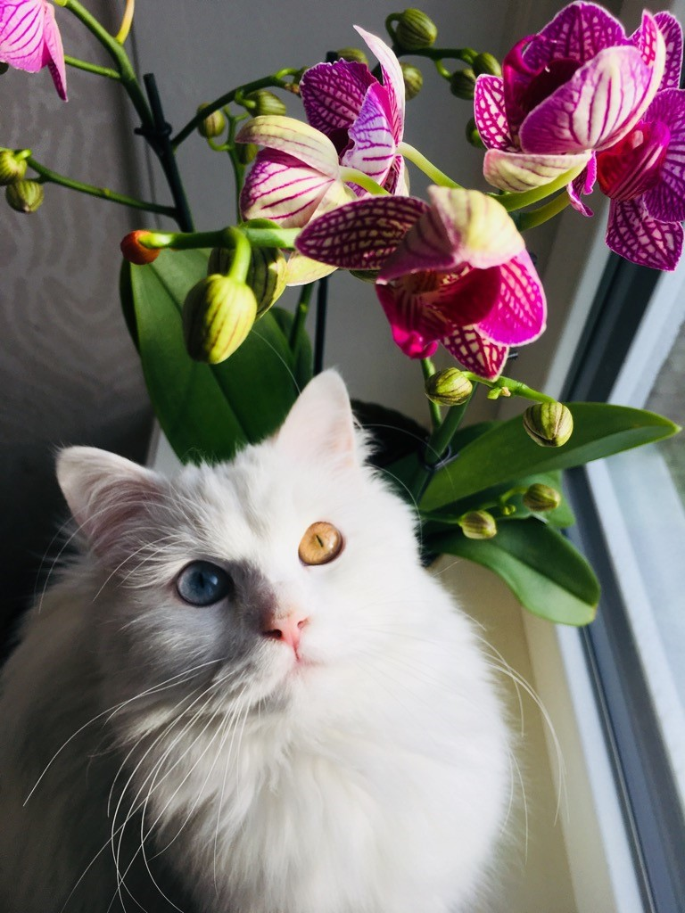
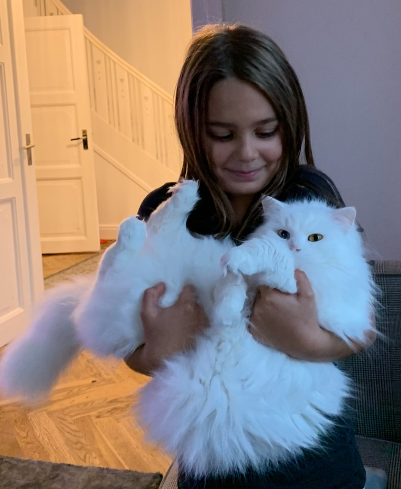
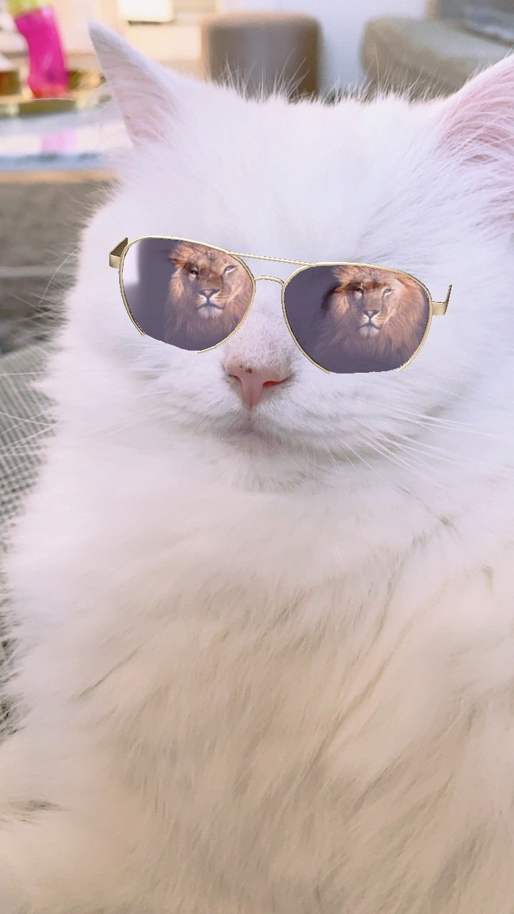

This website is about the cat Mirri. She lives with her humans, who are two adults (I´m one of those), two teenage boys and a little girl. Mirri and the people, lives near the sea but she has unfortunately never seen it, since she has only been out in her garden. She's a little scared of the big world out there. Here on the web, she dares to be a little brave and show off. This cat is beautyful with her white fur and the cutest, smallest, pink nose. Her eyes have different colors, as you can see, one is blue and the other is yellow. She was born in 2017 and is now at an age when she (me) probably longs for cute baby kittens to take care of. So....she has been mated with a handsome Ragdoll, and is expecting cubs at any moment. It is so exciting and must of course be documented here. Cats on the internet are a popular phenomenon. Funny cat videos, cute kittens.. ..watching cats in general are according to research good for one's well-being. Since I am interested in health and also a little bit of a crazy cat lady, I want to share Mirri's wonderful cat life with you. So enjoy!
 Early in the morning, january 19:th 2021, Mirri came and woke me up. Now it was time! After several hours she had only ONE baby! The loveliest baby kitten ever, the cutest we have seen of course! Mirri is a small cat, with at fluffy fur, which we thought was the reason that she did not have a bigger belly. Mommy cat is proud and happy! We had expected many kittens and were stressed about how we would manage to take care of them all and eventually find a good home for them. With only ONE small toddler, the situation feels under control and very cozy instead.
Do you want to find out which cat and breed suits you? Check out this page: Zooplus Webpage
